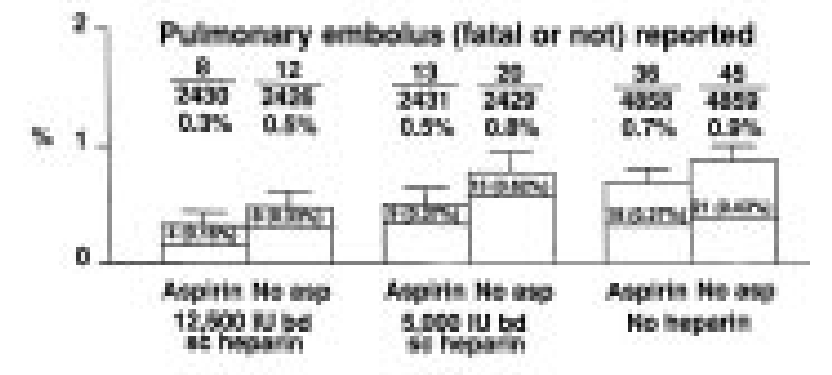

Creation of figure 5.D. It illustrates how pulmonary embolism after 14 days is related to 6 combinations of doses of heparin and aspirin.
In the report it looks like this:

Loading Libraries
library(ggplot2)
Warning: package 'ggplot2' was built under R version 4.2.3
library(dplyr)
Warning: package 'dplyr' was built under R version 4.2.3
Attaching package: 'dplyr'
The following objects are masked from 'package:stats':
filter, lag
The following objects are masked from 'package:base':
intersect, setdiff, setequal, union
library(readr)
Warning: package 'readr' was built under R version 4.2.3
Loading Data
data <-read_tsv("../data/03_dat_aug.tsv")
Rows: 19435 Columns: 97
── Column specification ────────────────────────────────────────────────────────
Delimiter: "\t"
chr (69): RCONSC, SEX, RSLEEP, RATRIAL, RCT, RVISINF, RHEP24, RASP3, RDEF1, ...
dbl (27): RDELAY, AGE, RSBP, RYEAR, HOURLOCAL, MINLOCAL, DAYLOCAL, ONDRUG, D...
lgl (1): DDEAD
ℹ Use `spec()` to retrieve the full column specification for this data.
ℹ Specify the column types or set `show_col_types = FALSE` to quiet this message.
Finding Relevant Data
In order to make the correct plot, it is necessary to use the same variables as the authors of the article. In order to validate that the correct variables have been identified a table summing the number of patients in each group is made:
data |>group_by(RXASP,RXHEP,PE14) |>count()
# A tibble: 12 × 4
# Groups: RXASP, RXHEP, PE14 [12]
RXASP RXHEP PE14 n
<chr> <chr> <chr> <int>
1 N L N 2409
2 N L Y 20
3 N M N 2414
4 N M Y 12
5 N N N 4815
6 N N Y 45
7 Y L N 2419
8 Y L Y 13
9 Y M N 2422
10 Y M Y 8
11 Y N N 4822
12 Y N Y 36
The numbers here seems to fit the numbers from figure 5.D to the extent that it can be read.
Data Augmentation
In order to make the data set smaller and more clearly arranged, all other columns than the three relevant, are removed:
relevant_data <- data |>select(RXHEP, RXASP, PE14)
The plot has percentages of reported pulmonary embolism on the y-axis. Such a variable is created.
percentage_data <- relevant_data |>#Counts the patients in each groupgroup_by(RXHEP, RXASP, PE14) |>count() |>#Creates the six groups examinedgroup_by(RXHEP, RXASP) |>#Creates a row with percentages for use in plotmutate(total_in_group =sum(n),percentage = n / total_in_group *100,p = n / total_in_group,se =sqrt(p * (1- p) / total_in_group) *100) |>#Removes all patients with no reported pulmonary embolismfilter(PE14 !="N")
To get the same order of the columns in the plot, the factors are applied to the data: